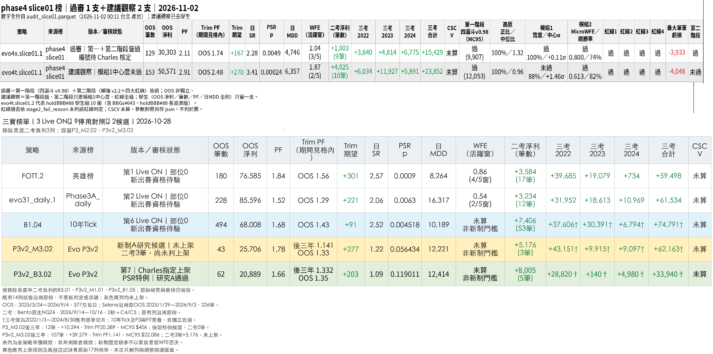
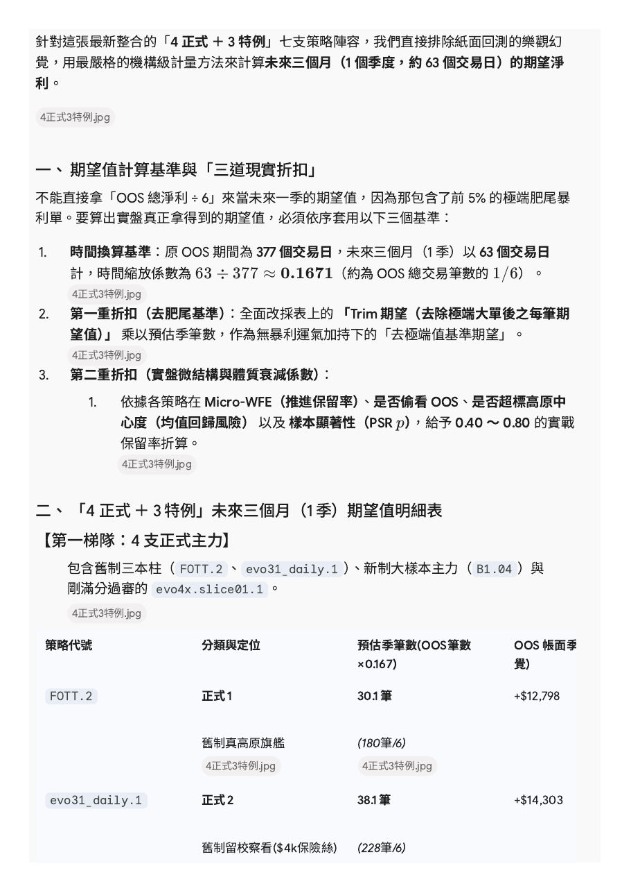
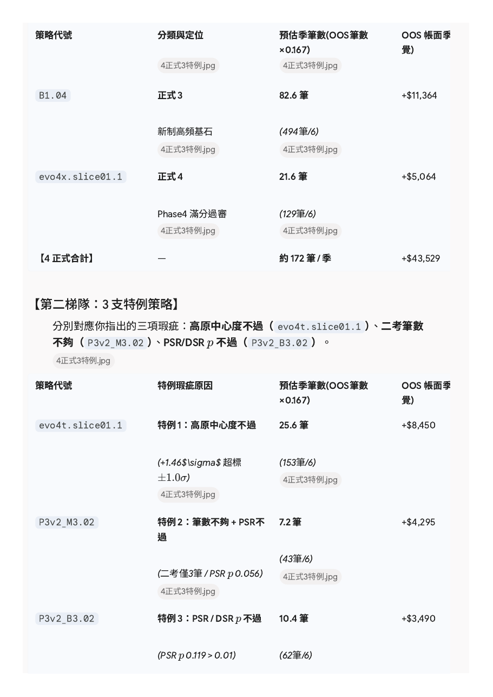
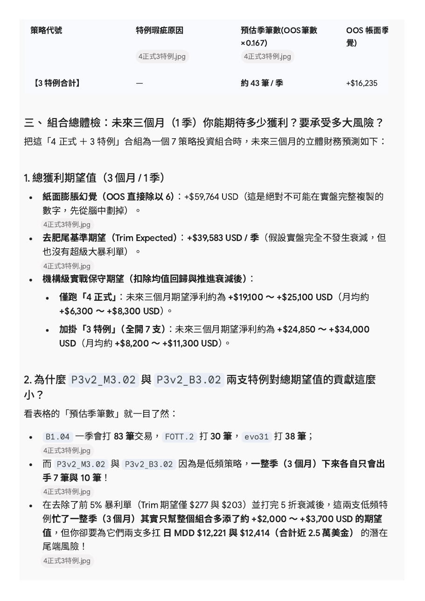
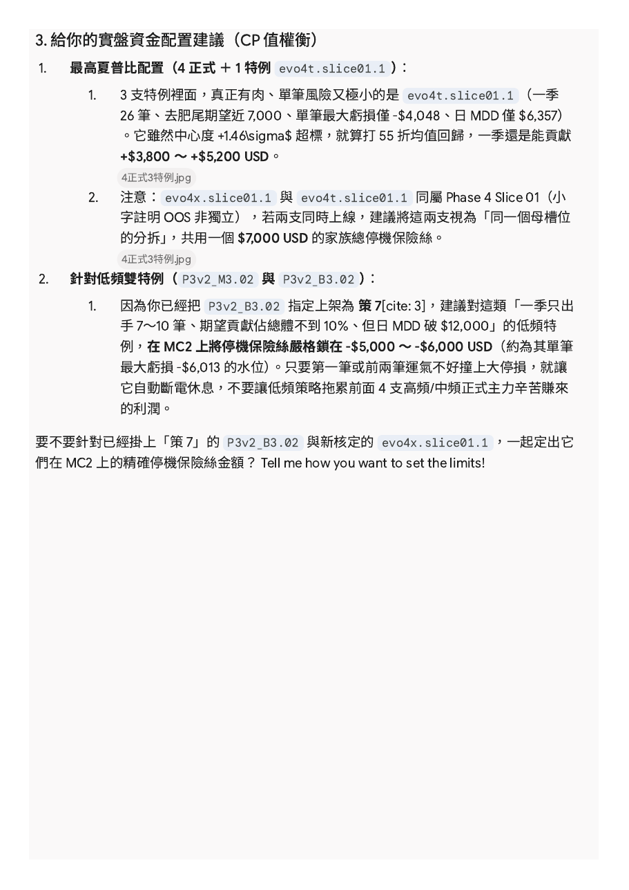

四正式+三特例 期望值

針對這張最新整合的「4 正式 ＋ 3 特例」七支策略陣容，我們直接排除紙面回測的樂觀幻覺，用最嚴格的機構級計量方法來計算未來三個月（1 個季度，約 63 個交易日）的期望淨利。
一、 期望值計算基準與「三道現實折扣」
不能直接拿「OOS 總淨利 ÷ 6」來當未來一季的期望值，因為那包含了前 5% 的極端肥尾暴利單。要算出實盤真正拿得到的期望值，必須依序套用以下三個基準：
- 時間換算基準：原 OOS 期間為 377 個交易日，未來三個月（1 季）以 63 個交易日計，時間縮放係數為 63 ÷ 377 ≈ 0.1671（約為 OOS 總交易筆數的 1/6）。
- 第一重折扣（去肥尾基準）：全面改採表上的 「Trim 期望（去除極端大單後之每筆期望值）」 乘以預估季筆數，作為無暴利運氣加持下的「去極端值基準期望」。
- 第二重折扣（實盤微結構與體質衰減係數）：
- 依據各策略在 Micro-WFE（推進保留率）、是否偷看 OOS、是否超標高原中心度（均值回歸風險） 以及 樣本顯著性（PSR p），給予 0.40 ～ 0.80 的實戰保留率折算。
二、 「4 正式 ＋ 3 特例」未來三個月（1 季）期望值明細表
【第一梯隊：4 支正式主力】
包含舊制三本柱（ FOTT.2 、 evo31_daily.1 ）、新制大樣本主力（ B1.04 ）與剛滿分過審的 evo4x.slice01.1 。
| 策略代號 | 分類與定位 | 預估季筆數(OOS筆數 ×0.167) | OOS 帳面季覺) |
|---|
| FOTT.2 | 正式 1
舊制真高原旗艦 | 30.1 筆
(180筆/6) | +$12,798 |
| evo31_daily.1 | 正式 2
舊制留校察看($4k保險絲) | 38.1 筆
(228筆/6) | +$14,303 |
| B1.04 | 正式 3
新制高頻基石 | 82.6 筆
(494筆/6) | +$11,364 |
| evo4x.slice01.1 | 正式 4
Phase4 滿分過審 | 21.6 筆
(129筆/6) | +$5,064 |
| 【4 正式合計】 | — | 約 172 筆 / 季 | +$43,529 |
【第二梯隊：3 支特例策略】
分別對應你指出的三項瑕疵：高原中心度不過（ evo4t.slice01.1 ）、二考筆數不夠（ P3v2_M3.02 ）、PSR/DSR p 不過（ P3v2_B3.02 ）。
| 策略代號 | 特例瑕疵原因 | 預估季筆數(OOS筆數 ×0.167) | OOS 帳面季覺) |
|---|
| evo4t.slice01.1 | 特例 1：高原中心度不過
(+1.46$\sigma$ 超標 ±1.0σ) | 25.6 筆
(153筆/6) | +$8,450 |
| P3v2_M3.02 | 特例 2：筆數不夠 + PSR不過
(二考僅3筆 / PSR p 0.056) | 7.2 筆
(43筆/6) | +$4,295 |
| P3v2_B3.02 | 特例 3：PSR / DSR p 不過
(PSR p 0.119 > 0.01) | 10.4 筆
(62筆/6) | +$3,490 |
| 【3 特例合計】 | — | 約 43 筆 / 季 | +$16,235 |
三、 組合總體檢：未來三個月（1 季）你能期待多少獲利？要承受多大風險？
把這「4 正式 ＋ 3 特例」合組為一個 7 策略投資組合時，未來三個月的立體財務預測如下：
1. 總獲利期望值（3 個月 / 1 季）
- 紙面膨脹幻覺（OOS 直接除以 6）：+$59,764 USD（這是絕對不可能在實盤完整複製的數字，先從腦中劃掉）。
- 去肥尾基準期望（Trim Expected）：+$39,583 USD / 季（假設實盤完全不發生衰減，但也沒有超級大暴利單）。
- 機構級實戰保守期望（扣除均值回歸與推進衰減後）：
- 僅跑「4 正式」：未來三個月期望淨利約為 +$19,100 ～ +$25,100 USD（月均約 +$6,300 ～ +$8,300 USD）。
- 加掛「3 特例」（全開 7 支）：未來三個月期望淨利約為 +$24,850 ～ +$34,000 USD（月均約 +$8,200 ～ +$11,300 USD）。
2. 為什麼 P3v2_M3.02 與 P3v2_B3.02 兩支特例對總期望值的貢獻這麼小？
看表格的「預估季筆數」就一目了然：
- B1.04 一季會打 83 筆交易， FOTT.2 打 30 筆， evo31 打 38 筆；
- 而 P3v2_M3.02 與 P3v2_B3.02 因為是低頻策略，一整季（3 個月）下來各自只會出手 7 筆與 10 筆！
- 在去除了前 5% 暴利單（Trim 期望僅 $277 與 $203）並打完 5 折衰減後，這兩支低頻特例忙了一整季（3 個月）其實只幫整個組合多添了約 +$2,000 ～ +$3,700 USD 的期望值，但你卻要為它們兩支多扛 日 MDD $12,221 與 $12,414（合計近 2.5 萬美金） 的潛在尾端風險！
3. 給你的實盤資金配置建議（CP 值權衡）
- 最高夏普比配置（4 正式 ＋ 1 特例 evo4t.slice01.1 ）：
- 3 支特例裡面，真正有肉、單筆風險又極小的是 evo4t.slice01.1 （一季 26 筆、去肥尾期望近 7,000、單筆最大虧損僅 -$4,048、日 MDD 僅 $6,357）。它雖然中心度 +1.46\sigma$ 超標，就算打 55 折均值回歸，一季還是能貢獻 +$3,800 ～ +$5,200 USD。
- 注意： evo4x.slice01.1 與 evo4t.slice01.1 同屬 Phase 4 Slice 01（小字註明 OOS 非獨立），若兩支同時上線，建議將這兩支視為「同一個母槽位的分拆」，共用一個 $7,000 USD 的家族總停機保險絲。
- 針對低頻雙特例（ P3v2_M3.02 與 P3v2_B3.02 ）：
- 因為你已經把 P3v2_B3.02 指定上架為 策 7[cite: 3]，建議對這類「一季只出手 7～10 筆、期望貢獻佔總體不到 10%、但日 MDD 破 $12,000」的低頻特例，在 MC2 上將停機保險絲嚴格鎖在 -$5,000 ～ -$6,000 USD（約為其單筆最大虧損 -$6,013 的水位）。只要第一筆或前兩筆運氣不好撞上大停損，就讓它自動斷電休息，不要讓低頻策略拖累前面 4 支高頻/中頻正式主力辛苦賺來的利潤。
要不要針對已經掛上「策 7」的 P3v2_B3.02 與新核定的 evo4x.slice01.1 ，一起定出它們在 MC2 上的精確停機保險絲金額？ Tell me how you want to set the limits!
PDF 原檔
下載 PDF（4 頁）



